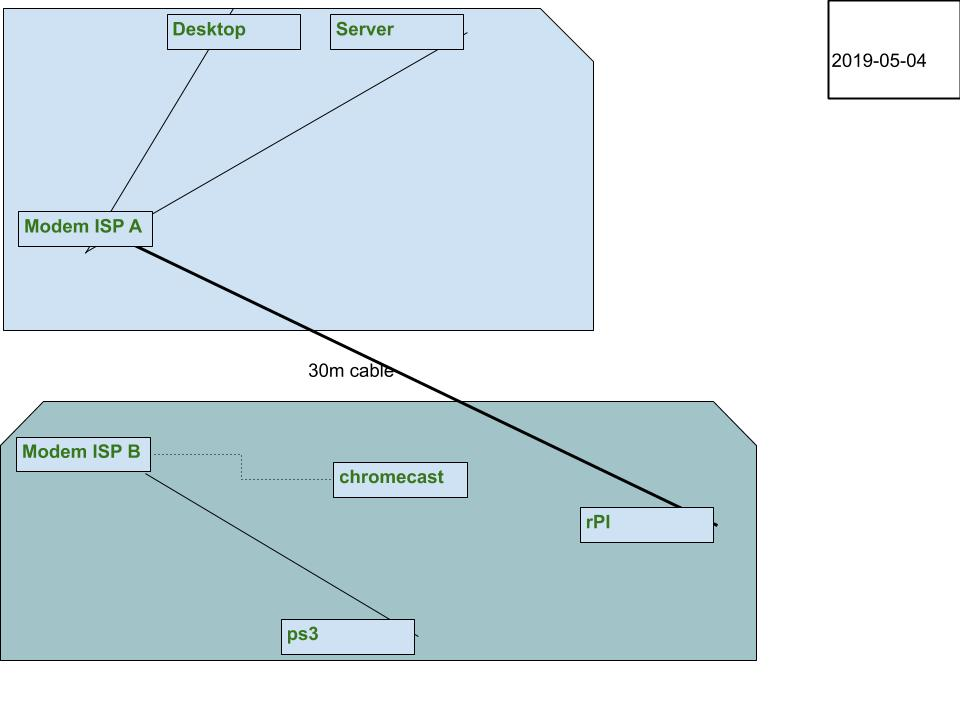

Current layout:

- The corner:
- Cable MODEM NAT&WiFi ISP A
- One server
- One desktop who should be on both networks, default gw on one
- Phones and tablets wifi
- TV Area:
- DSL Modem NAT&WiFi ISP B
- One raspberry pi connected to the server
- Phones and tablets wifi
- One chromecast, would be nice to have connected to the server too
- One ps3
- 20m, a microwave, and walls in between the two areas (and most importantly the server and the raspberry pi) so wifi is spotty.
Most import factor: One long ass 30m UTP cable connecting the raspberry pi to the same network as the server
It would be cool to: A) be able to connect the desktop to the modem out by the TV and B) Get the chromecast (WIFI only) onto the same network as the server, perhaps with an AP for ISP A network near the TV area
Stay tuned for another post in the hopefully near future when I've got something working to help with A/B :)
Update : another graphical representation of the netwirjs: